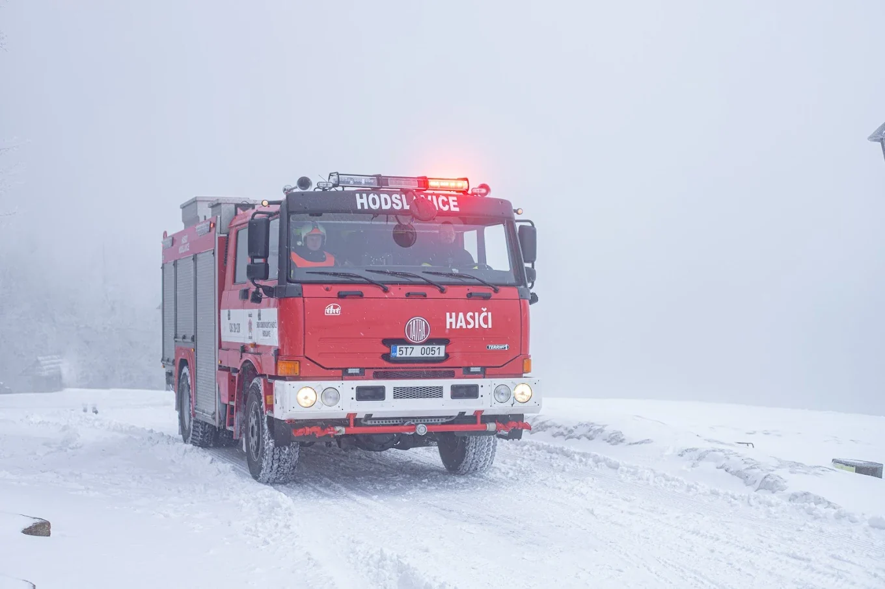

VýjezdyArchiv zásahů
Výjezdy
Archiv zásahové činnosti jednotky.
Archiv
Rok 2024
Přehled dostupných výjezdů. Další roky lze doplnit z archivu sboru.
| Datum | Typ | Místo | Podtyp | Technika |
|---|---|---|---|---|
| 8. ledna | Technická pomoc | Hostašovice | Odstranění nebezpečných stavů | CAS 20 T815 Terno |
| 26. února | Požár | Nový Jičín | Požár nízké budovy | CAS 20 T815 Terno |
| 5. března | Požár | Nový Jičín | Průmyslové objekty, sklady | CAS 20 T815 Terno |
| 8. března | Požár | Nový Jičín Loučka | Průmyslové objekty, sklady | CAS 20 T815 Terno |
| 11. března | Požár | Frenštát pod Radhoštěm | Průmyslové objekty, sklady | CAS 20 T815 Terno |
| 13. března | Technická pomoc | Hodslavice | Transport pacienta | CAS 20 T815 Terno |
| 29. března | Technická pomoc | Hodslavice | Odstranění stromu | CAS 20 T815 Terno |
| 31. března | Požár | Životice u Nového Jičína | Požár nízké budovy | CAS 20 T815 Terno |
| 7. dubna | Technická pomoc | Nový Jičín | Účast na kulturní akci | CAS 20 T815 Terno |
| 27. dubna | Technická pomoc | Hodslavice | Transport pacienta | CAS 20 T815 Terno |
| 30. dubna | Technická pomoc | Hodslavice | Odstranění stromu | CAS 20 T815 Terno |
Souhrn
Typy zásahů
🔥
Požáry
Nízké budovy, průmyslové objekty, sklady i další situace, kde je potřeba nasadit cisternu a zásahové družstvo.
🌲
Technické pomoci
Odstranění stromů, transport pacienta, odstranění nebezpečných stavů a pomoc při mimořádných událostech.
🏘️
Podpora obce
Požární hlídky a asistence u vybraných kulturních nebo komunitních akcí.